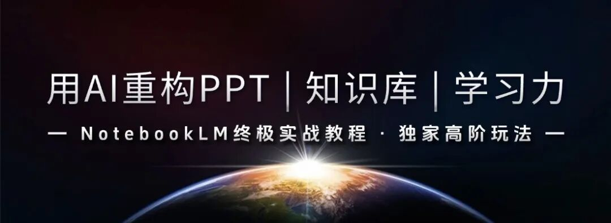
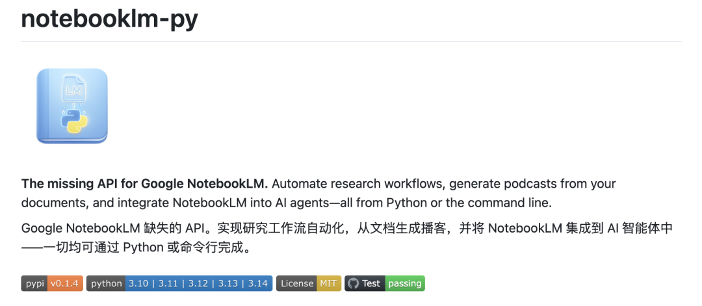
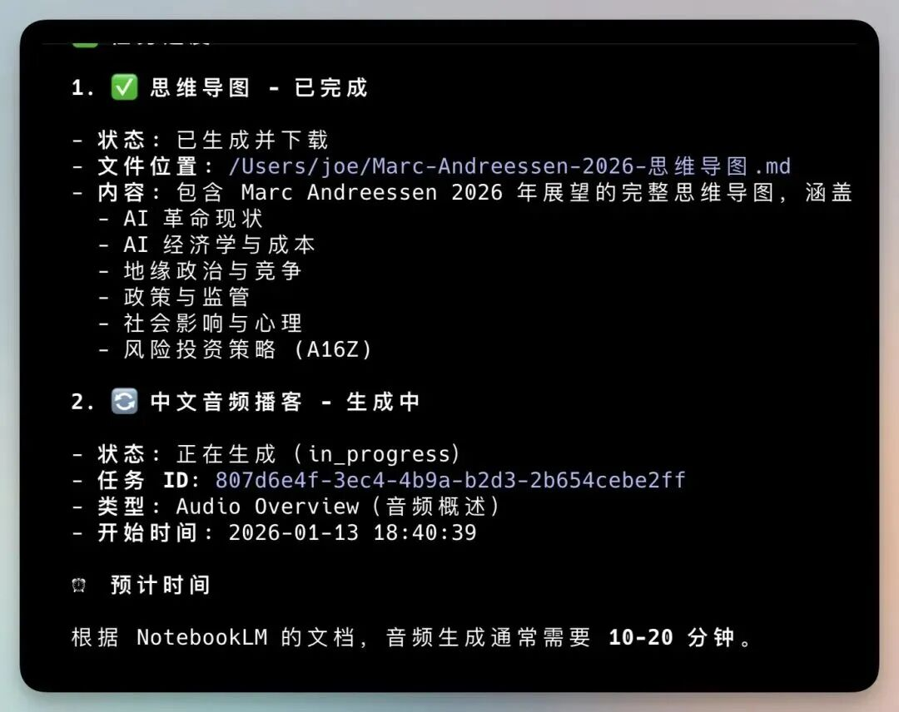
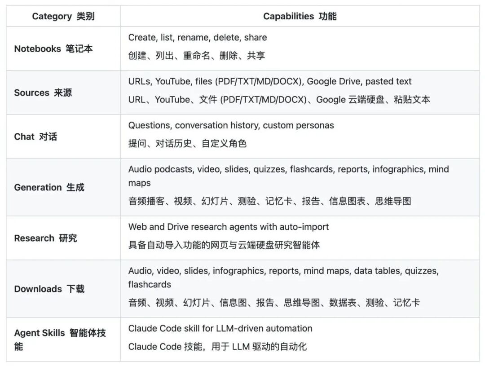

▲▲ 点击上方公众号卡片，回复 PPT ，即可获得包含“PPT提示词、PPT乱码修改可编辑”等场景的《Notebooklm PPT高级教程》，点击 星标 第一时间接收教程推送
你好，我是天亦，一名企业AI战略顾问、AI讲师。
如果说AI工具有何颠覆性创新，Google推出的NotebookLM必定占据一席之地。
它凭借强大的Gemini模型与多模态生成能力，已成为内容创作与研究分析的利器。
然而，传统网页端操作仍存在效率瓶颈。
现在，开发者社区带来了革命性解决方案：notebooklm-py。
这款开源工具将NotebookLM完整接入命令行环境，让AI知识处理迈入自动化新纪元。

一、 NotebookLM命令行工具：核心价值解析
该项目在GitHub发布后迅速获得技术圈关注，它本质上填补了官方能力的空白：
notebooklm-py：为Google NotebookLM提供了缺失的API支持。实现研究工作流自动化，从文档生成播客，并将NotebookLM集成到AI智能体中——全部通过Python或命令行完成。
其核心价值在于将交互式操作转化为可编程指令。
如图所示，工具已实现思维导图生成、音频播客制作等任务的流水线处理：

二、 三种部署模式，满足不同场景需求
1. 基础环境准备
# 基础库安装pip install notebooklm-py# 支持浏览器登录（首次配置必需）pip install "notebooklm-py[browser]"playwright install chromium
2. 三种集成方案
Claude Skills集成（最适合AI智能体用户）
通过命令行界面安装，或者让Claude Code来安装notebooklm skill install然后使用自然语言："制作一个关于量子计算的播客""将测验下载为markdown格式""/notebooklm 生成视频"
命令行界面操作（适合自动化脚本开发）
# 1. 首次运行先要登录认证（会打开浏览器）notebooklm login# 2. 创建一个 notebooknotebooklm create "My Research"notebooklm use <notebook_id># 3. 添加源notebooklm source add "https://en.wikipedia.org/wiki/Artificial_intelligence"notebooklm source add "./paper.pdf"# 4. 自然语言对话notebooklm ask "What are the key themes?"# 5. 生成播客notebooklm generate audio --waitnotebooklm download audio ./podcast.mp3
Python API调用（适合二次开发集成）
import asynciofrom notebooklm import NotebookLMClientasync def main():async with await NotebookLMClient.from_storage() as client:# List notebooksnotebooks = await client.notebooks.list()# Create notebook and add sourcenb = await client.notebooks.create("Research")await client.sources.add_url(nb.id, "https://example.com")# Chatresult = await client.chat.ask(nb.id, "Summarize this")print(result.answer)# Generate podcaststatus = await client.artifacts.generate_audio(nb.id)await client.artifacts.wait_for_completion(nb.id, status.task_id)asyncio.run(main())
三、 功能矩阵全览：从内容生成到智能研究
该工具的功能覆盖远超基础问答，形成完整的知识处理生态：

四、 目标用户画像：谁最需要这个工具？
专业研究者：需要处理大量文献、数据报告的技术调研人员
内容创作者：定期产出播客、视频脚本的多媒体内容团队
知识管理师：构建个人知识体系、需要高效消化信息的终身学习者
AI智能体开发者：基于Claude Code/Gemini CLI构建复杂工作流的工程师
五、 趋势洞察：命令行交互代表未来方向
当前AI产品过度追求界面炫技，但真正的高阶用户更需要可编程性与自动化能力。
NotebookLM本身具备顶尖的RAG（检索增强生成）能力，而命令行工具将其转化为知识处理的自动化管道。
未来趋势已然明朗：信息从多元渠道（PDF、视频、网页）自动流入，经AI解析重组后，按需输出目标格式（思维导图、播客、PPT）。
notebooklm-py正是构建该自动化流程的核心组件。
项目地址：https://github.com/teng-lin/notebooklm-py
欢迎转发分享给你朋友家人一起学习